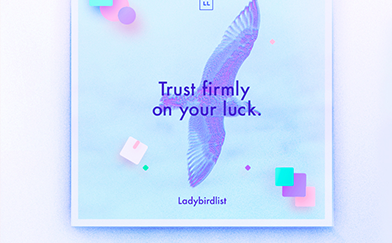

学生提问： 这个学生提了一个很长很长的问题，这个学生提了一个很长很长的问题， 这个学生提了一个很长很长的问题？ 点击收听 60" 点击收听 60" 点击收听 60"  提问时间：2018-1-23 16:00
老师回答： 这个学生提了一个很长很长的问题，这个学生提了一个很长很长的问题， 这个学生提了一个很长很长的问题？ 点击收听 60" 点击收听 60" 点击收听 60" 回答时间：2018-1-23 16:00
追问问题： 这个学生提了一个很长很长的问题，这个学生提了一个很长很长的问题， 这个学生提了一个很长很长的问题？ 点击收听 60" 点击收听 60" 点击收听 60" 追问时间：2018-1-23 16:00
追问回答： 这个学生提了一个很长很长的问题，这个学生提了一个很长很长的问题， 这个学生提了一个很长很长的问题？ 点击收听 60" 点击收听 60" 点击收听 60" 回答时间：2018-1-23 16:00